Proxying comes in many forms. This guide is about producing very high quality proxies that pass the across-the-table sniff test. Two methods, one hobby.
Updated: 01 APR 2026 — Not April Fools. Double-sided printing findings added.
Proxying comes in many forms and sometimes is even confused with bootlegging/counterfeit cards. This article is about proxies and producing very high quality proxies that pass the across-the-table sniff test. You can of course use low quality proxies like printing at your library with sites like mtgprint.net where you will get low resolution, but identifiable prints for cheap. Or go to the bottom of the barrel and just use a sharpie and basic land and write the card you want. This article is not about that kind of proxying, although I just did give you an exhaustive how-to on that method.
Instead the objective is to present 2 ways to proxy and the process I have personally used where I have found success. I will also include at the end resources that I used to help me make decisions when I decided to only print from home. This is obviously based on my own subjectivity and you should still seek out other opinions by reading the existing posts found on sites and subreddits like /r/magicproxies. I am also based out of the USA, so pricing, availability of resources, supplies, etc, may not match what you have around you and would require you to do some of your own research to fill in those gaps.
So, the two ways you can make high quality proxies and avoid waiting for mail and paying a premium for others to print proxies for you?
Method 1: FedEx Office
~$80–100 initial investment · ~15–18¢ per card after
Use FedEx Office (or an office printing store near you, ymmv). This method has a moderate initial investment for supplies and after that the per-card cost is reasonable.
Method 2: EcoTank Home Printing
Same supply cost + $250–600 for printer · ~4–6¢ per card after
Print from home using an ecotank inkjet printer. This has the same initial investment above, but also requires you to buy a printer which can be as cheap as ~$250 and with the common goal of the 8500/8550 which sells for ~$600, but these go on sale from time to time.
You will notice I did not mention laser printers. These are an option and you may already have one, but home laser's are not economical to the hobby and thus not covered here.
The Mindset
Before You Choose Your Method, an Abstract on the Hobby
It is important that one treats proxying, no matter which method you choose, as its own separate hobby adjacent to MTG (or whatever you're proxying). This will require learning things you maybe had no intention of learning. Bookmarking a couple websites. Maybe joining a discord. And if you're really nuts, getting into creating your own proxies. While this hobby isn't difficult, it is time consuming and requires an enjoyment via the act of creation (printing, laminating, cutting, cornering, showing off your print). If you believe you would not be interested or enjoy having an arts and crafts hobby this will feel like a chore and I would imagine maybe even hinder your enjoyment of your original hobby (MtG) of slinging cardboard.
There is no perfect proxy method out there unless you own an industrial UV printer and have a decent amount of funds behind that. While you can almost always make a great looking proxy with a printer from FedEx or one of the Epson Ecotanks, getting that feel of a real card just right is where people (myself included) really get into the weeds. You must be able to understand you must sacrifice one of the fidelities in card feel: Either Thickness or Rigidity, and find that goldilocks zone that YOU are comfortable with.
Preparation
Getting Ready to Print
A big gap I have noticed in people messaging me is they use prep-sites which do not offer them the best quality or exerpience. In this section I will review the 2 sites I use to prepare my prints and create the PDF, these are the only options in my opinion. Others have posted their own solutions (usually made by them) and other alternatives. They still some how are more complicated and much worst than these very simple and community driven (or open source) webtools.
MPCFill Picture Guide>
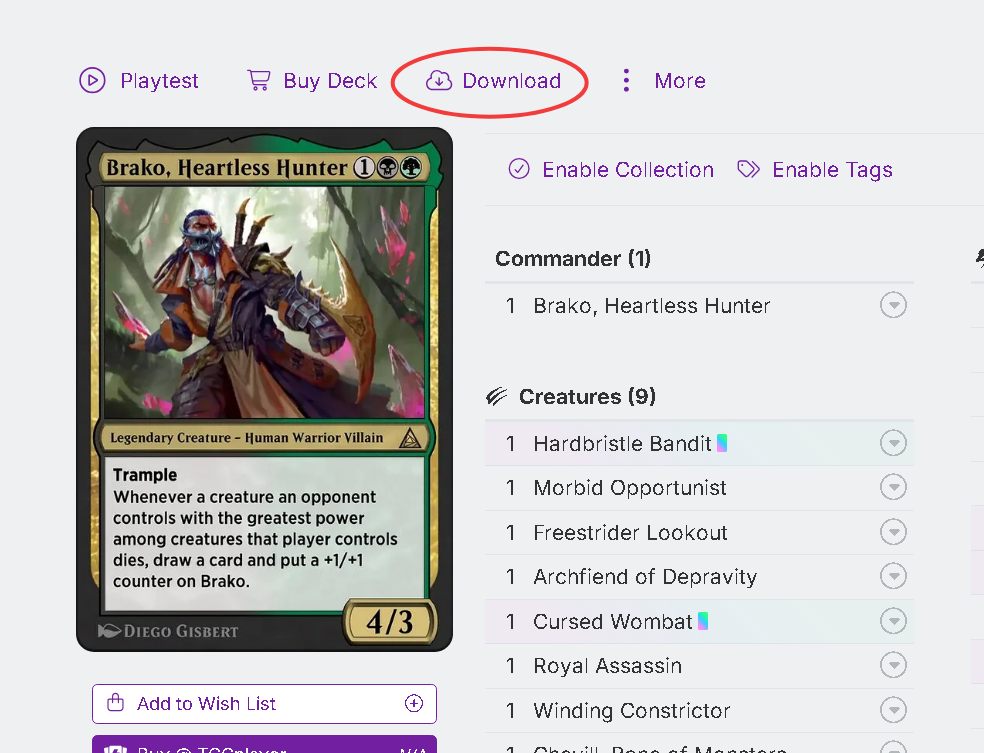
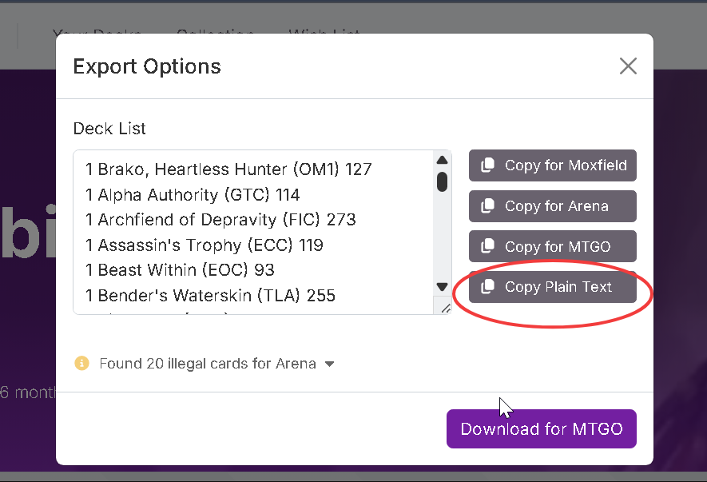
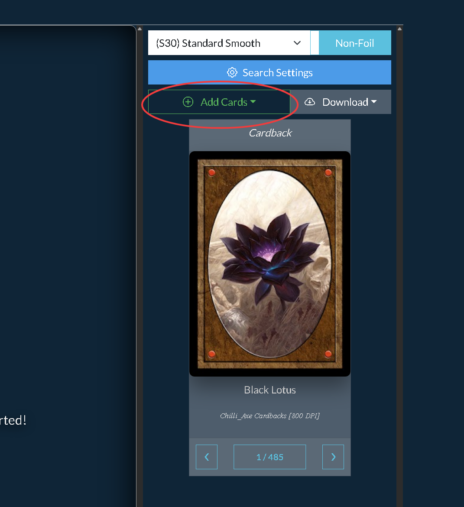
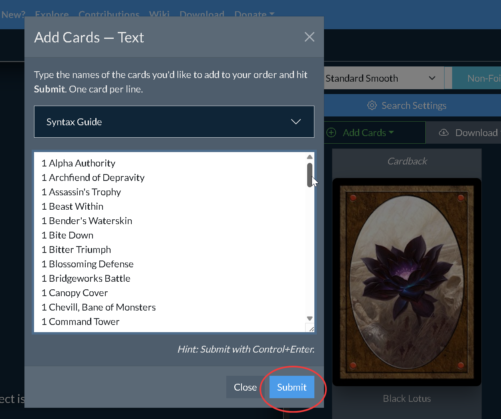
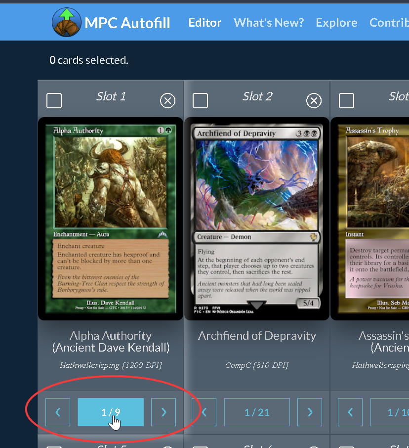
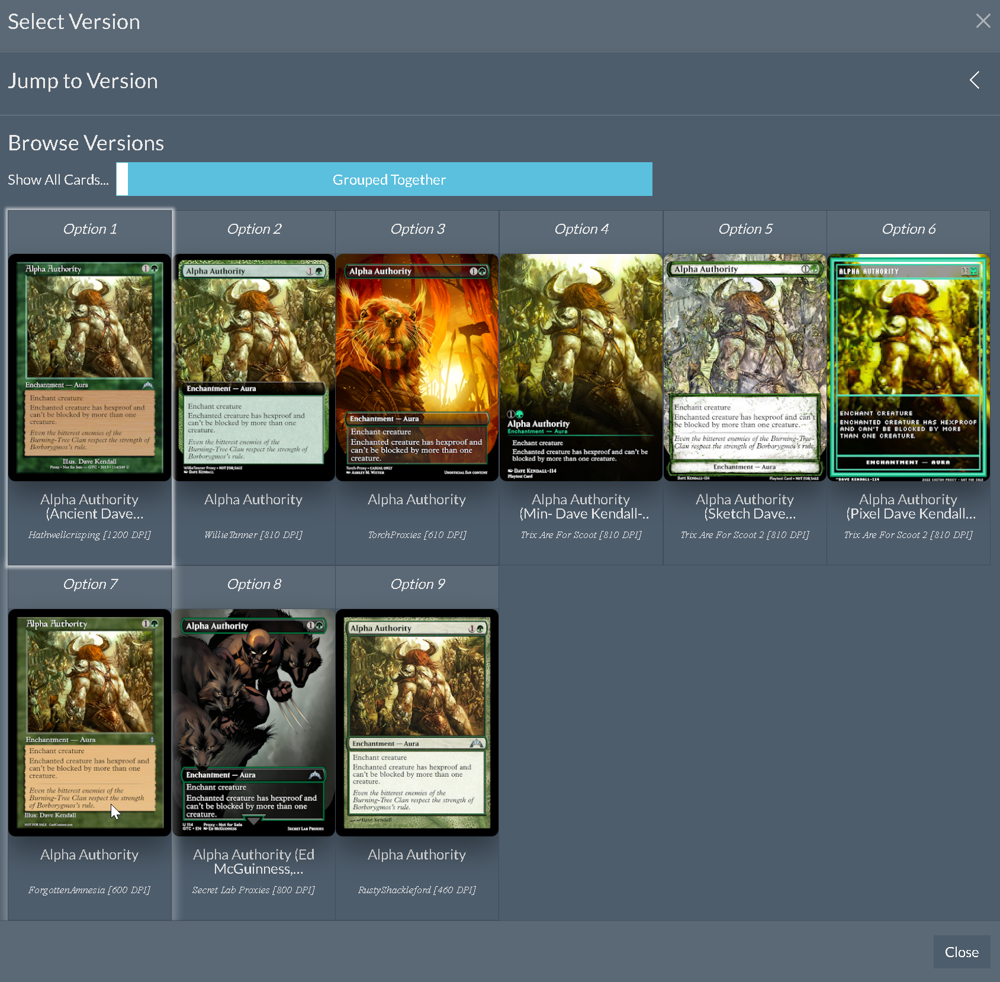
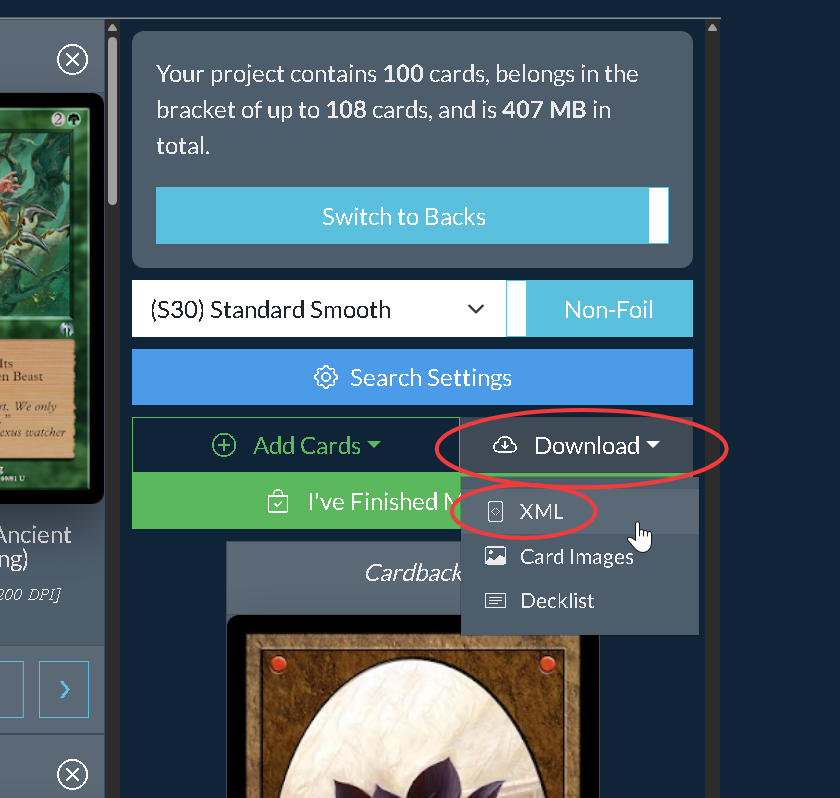
Bookmark these two sites:
mpcfill.com/editor — Where you can source the majority if not all of your card images.
proxyprint.taxiera.net — The place you will upload images/xml file(s) to create your PDF.
Optionally, use sites like Archidekt or Moxfield to create your card list.
Go to MPCFill and click the green Add Cards button. Using text is what I usually use, but if your decklist is not set to private you can use URL as well.
The left container will populate with all of your cards, but you should probably inspect every single card to make sure it has the art, design, and stamps you want. Click on the center button below the card image (1/##) and you will see all available art.
Once all of your cards are the way you want them, download the XML file under the gray Download button. It's just a small text-based file that can be used on the next site to import your cards without downloading each image individually.
If you ever want to come back to this card list with MPCFill you can use that same XML file with the Add Cards button.
Now go to ProxyPrint. Click Add Images and select your XML file. Then wait as the site pulls each image over.
Use the settings you see in the image shown here.
Protip — Artist Priority
As you get more comfortable with MPCFill you may find that you like certain proxy-artists more than others. You can make them priority by going to Search Settings and using Ctrl+F to find and move that artist to the top of the list. For example, PsilosX, Hathwellscriping, and RustyShackleford have some of the best quality arts that are faithful to the originals; with the latter having almost the entire MTG library, commons, dumpster cards, etc.
Protip — Pay Attention to Details
Pay attention to what you like — frames, set symbols, artist stamps, etc. Take your time selecting a design you enjoy every aspect of. For me, I want the actual set symbol. And I also don't like it too much when the proxy'er signs the card. Understand your personal preferences before clicking print.
Protip — Cost Effective Printing
Print in multiples of 9 so you fill an entire page of cards. When in doubt, print another Delney or Dual Land.
Prepress
Before You Print
If you want to have the crispest and highest color fidelity with your prints it is worthwhile to take certain steps to ensure you get your best results the first time.
I will begin with a step you can take no matter the method you use and that is proofing your pdf to reach saturation and contrast that matches MTG. This will help your shadows not become just melded with the background, seperate colors, and help with exposure. When you apply these steps it may look like it is "lightening" the image and washing out the blacks, but I promise once you print you will see why we do it.
You will need an application capable of applying adjustment layers. Photoshop is the most popular software, but GIMP is a free alternative. GIMP is its own software and functions out of the box very differently than Photoshop (if you're already used to that). But learning it is simple and googling these steps will lead you to the direct answers.
Color Fixing Picture Guide>
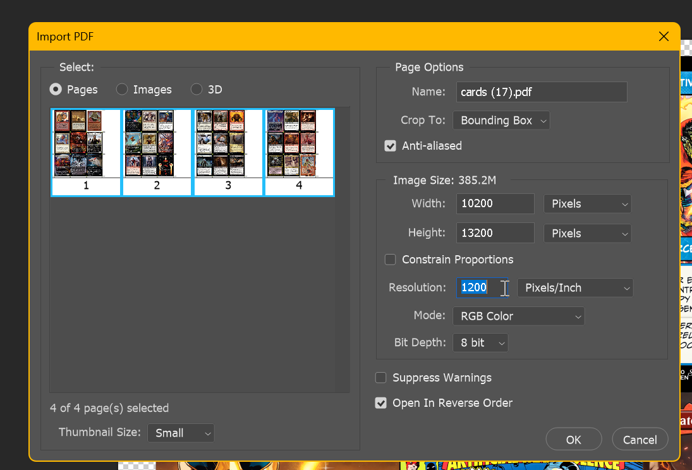
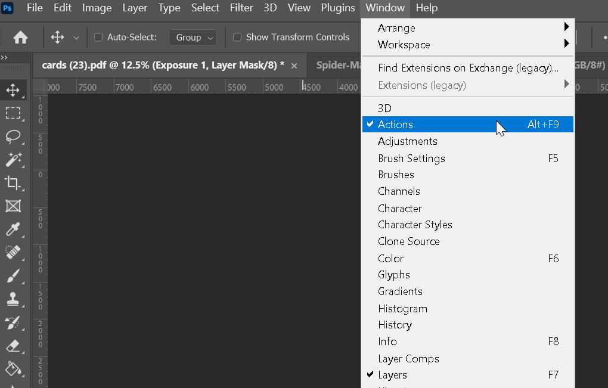
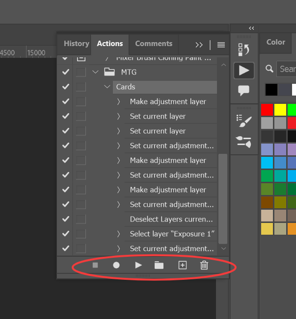
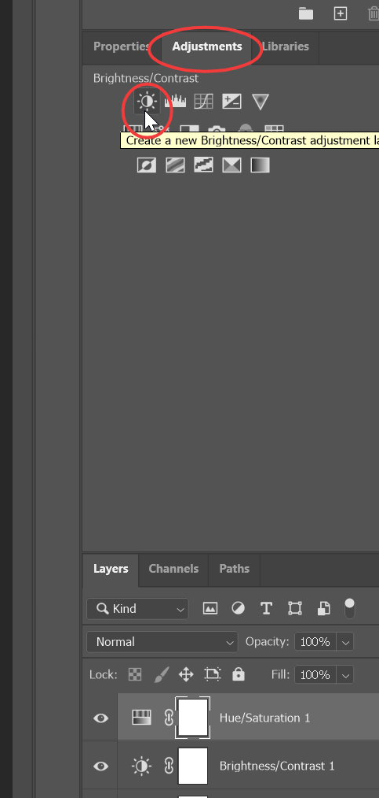
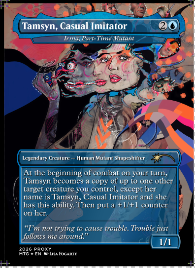
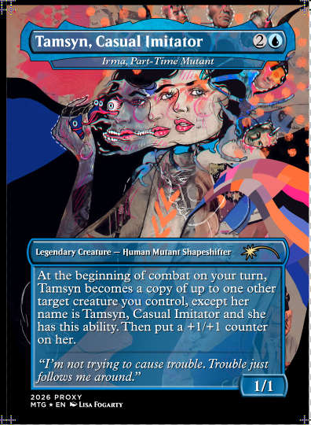
Open your PDF, if it has multiple pages you can ctrl+click each page and then set the Resolution to 1200, the rest should look the same.
Each page will open as its own file.
Go to Window and make sure Actions is selected, this will let us create a reusable macro to apply these settings every time with one click.
Open the actions and click the square with the + sign to create a new action.
Click the record button (the circle). Now every action you take will be recorded. But don't worry you can delete any step it records when we are done if you misclick anything.
Click the adjustments tab and click to add: Hue/Saturation, Brightness/Contrast, and Exposure.
Now in the Properties Tab:
Hue/Saturation: Set to +10 saturation
Bightness/Contrast: Set to +8 Brightness
Exposure: Set to +1.10 for Gamma Correction
Click the stop button (the square) and you can now press the play button on any future project page to apply these settings to instantly.
This is about as far as you can get for proofing your cards if you aren't printing them yourself, however, if you are printing them yourself, you can take further steps to really improve the quality of your cards.
Print Settings Picture Guide>
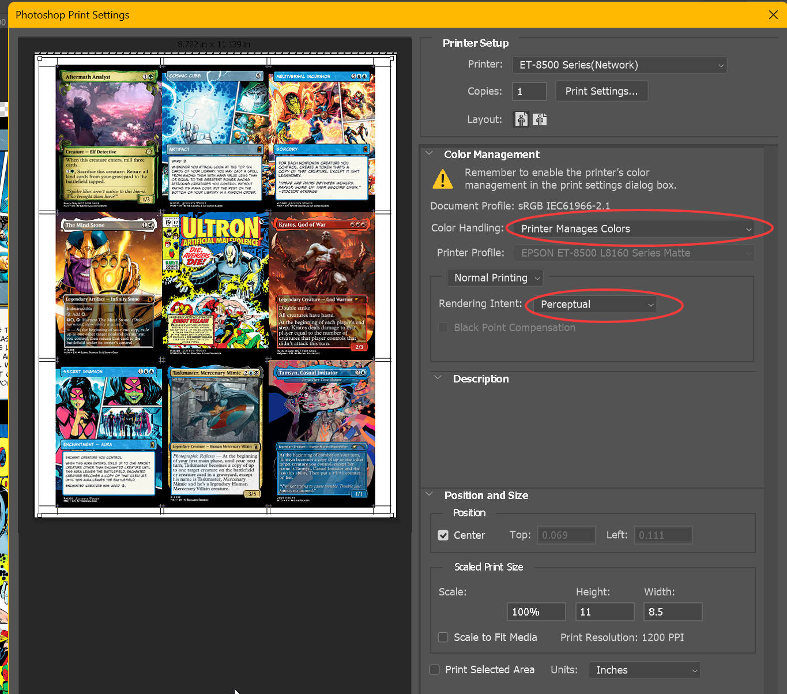
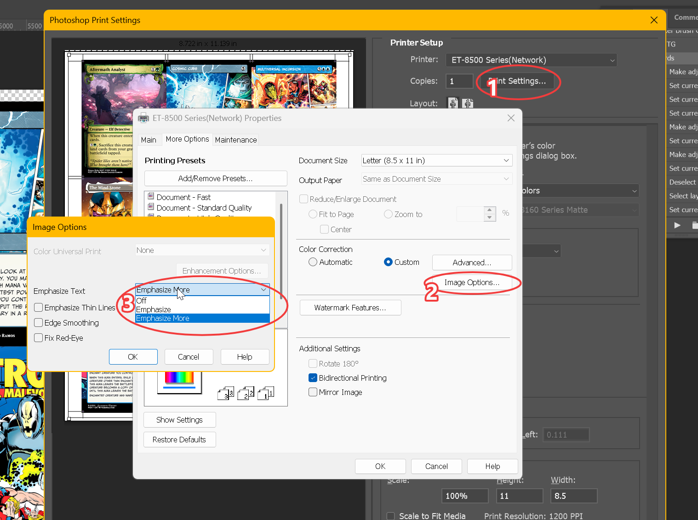
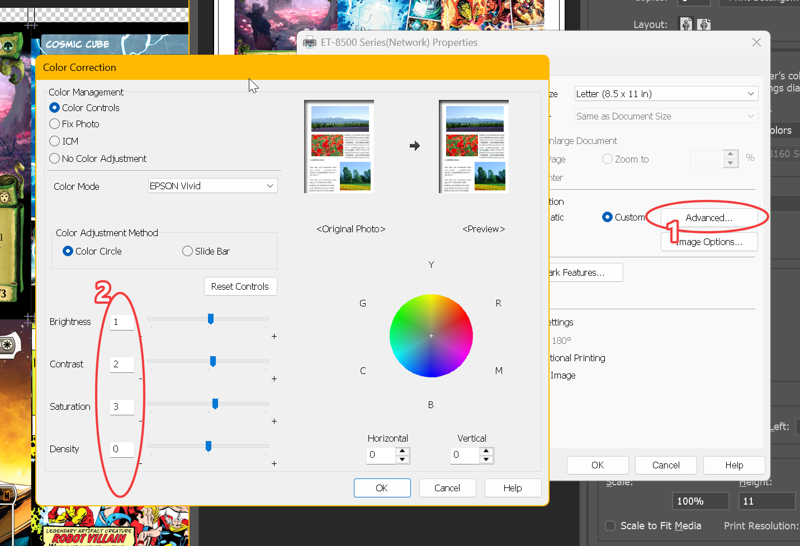
In Photoshop you will want to print each page directly.
Color Handling: Printer Manages Colors
Rendering Intent: Perceptual
Go into Printer Settings and go to More Options tab.
Click Image Options and where Emphasize Text drop down is, click Emphasize More. Then click OK.
Now go to Advanced and set your numbers to 3,2,1,0. Density sholid never be above 0, this adds more ink to the paper which you don't need.
Then click Ok until you are back to the Photoshop print screen. You are now ready to print.
As a note, make sure you have selected your default settings on Main in Printer settings, it will be different based on your paper.
Method 1
FedEx Office
I have a couple reviews on my experience using Office Depot and FedEx Office in my post history on reddit. My review of Office Depot is they are hot garbage, but this is a localized issue and ymmv between office printing stores. It is best you go physically visit them and ask about what they have to offer. FedEx Office is nice in my opinion because their site is very straight forward and they have a good turn around time and quality control. I believe FedEx Office simply has better consistency across county lines because of how enormously rich they are and they do spend money on technology and probably pay a little better than others (I am sure it [their pay] is still garbage).
Most FedEx Office's also have giant rotary cutters, so if you wanted to save even more money, you can use their rotary cutters. With that said, you must invest some money at this point. Here is what you will need to create high quality proxies at FedEx (and at home):
Supplies
~$60 — 12" Rotary Cutter (Dahle is the most common brand. I bought the 18" because it was cheaper, but this thing is annoyingly big. Shop around, these prices fluctuate.)
~$16 — Kadomaru Corner Punch (Do not budget on this — get the Kadomaru puncher. The cheaper ones will not punch through properly.)
~$30–50 — Laminator (I originally had a ~$20 Bonsai laminator and it was garbage — overheated, rotors got stuck. Go green and get a $30–50 laminator that is built to last. Get one that accepts your size of paper and preferably has an on/off switch.)
The American Economic Landscape is wild, so these prices may not reflect accurately depending on when you decide to jump in. I literally updated these now (31July2026), about a year later from originally posting this and the prices for these tools have increased by about 20%.
Placing the Order
Now that everything you need is in the mail, go to FedEx's printing portal. Bookmark this because it can sometimes be a pain to find via their main site.
I have experience printing on 60lb and 80lb. After initial testing I preferred 60lb as it was perfect thickness after laminating, but now with a few months feet wet in the hobby I recommend sacrificing that thickness fidelity for better rigidity and go for 80lb. You can also experiment with other available options. FedEx Office also has unadvertised sizes at the shop, so visit them and they can give you samples. You will have to ask them how to order those — it usually requires emailing them instead of using the site.
Select the settings you see in the image (you do not need to adjust the quantity unless you want multiple copies of your cards). Upload your PDF, wait for the preview, ignore any finishing touch upsells, and Add to Cart.
That's basically it. You will get an email when it is ready and if they're as clutch as mine, a sweet elderly lady will call you telling you your prints are ready. Go to the front desk and tell them you're there to pick up your prints.
A Reality Check
An Intermission on Success and Expectations
You may be wondering now, "wait, all my backs are just white!" Yes, I do not print backs on my cards. For me it is a waste of money and all my decks are sleeved, so the only purpose I can surmise for wanting a back:
You're a stud and just want custom backs.
You want to make counterfeits.
You are selling your proxy services (not the same as #2).
These are all acceptable reasons, with 2 having a shade of moral dilemma, but I am neither of 1 or 3. Printing backs just costs extra and you have to really ask yourself how much a back is worth to you. Using FedEx, the cost for a card jumps to about 30¢ a card and at that point you may want to look into using MakePlayingCards.com and making a large order.
This is one of many examples of measuring your expectations and understanding that you need to be playing these cards in sleeves. The sleeve does a magical job of really cleaning up any imperfections you may feel for a proxy. Think the lamination finish looks off? Sleeve it and magically it's gone (it's magic, I looked it up). That white back looks horrendous? Wow, Dragon Shield sleeves never felt better. Is the feel a little off? Sleeve that bad boy and it suddenly blends in with every card.
I run decks that are 10%–50% proxies and while my stack may look a CM taller or so than my opponents it really doesn't flash itself and no amount of DIY David Blainery has allowed me to force a card to the top because I can tell one card (during a shuffle) is 0.04mm thicker amongst the 99. Also, are people not cutting your deck?
I say all this to bring us back to reality that we are not here creating counterfeits, just amazing proxies that ya, some of you may feel compelled to sell and why not, you made some great looking proxies and people want them. No shame in any of that.
Post-Print Process
I Have the Prints, Now What?
There are several methods out there — spray, immersion, single sided proxying, vinyl stickers, etc. I am a smooth brained individual and I don't want those variables and set ups. Here is my process: laminate and cut.
Warm up your laminator and wait for the indicator light to let you know when it is ready. Do not use it before then.
Place your print in the pouch only when you are ready to laminate. Don't pre-stage a bunch — they will collect dust and cause minor imperfections. The more TLC you give this step the more you get back.
Feed the pouch (closed end first) and slowly slide it in until the rollers catch. Let go. If you can, let the paper come out as parallel as possible with the table so it gets cooked evenly. Do not let it sit in the laminator — mine will let the last centimeter or so slow cook. Let them cool for a minute.
Trim the edges. Make sure you have a comfortable amount of space for your rotary cutter. First cut all 4 edges off so all the white is gone. Use the guide lines to assist. If you are using the Dahle, line up the guide line so it is above the silver edge and make sure both sides are aligned.
Cut the 3×3 grid horizontally — remember you have a gutter, so between cards you will cut twice. You should now have 3 strips of 3 cards each.
Cut vertically to separate the cards within each strip, following the same pattern.
Corner punch all 9 cards. You now have finished proxies. If you feel like it, you can run each card through the laminator once more, but I've never felt the need unless making foils.
Protip — Cutting Technique
Dahle is super sharp and stable — you do not need to move the shuttle across at light speed. I find that cutting too slowly encourages self-doubting adjustments which give bad cuts. Instead cut at an even and brisk swipe so that the shuttle lands against the opposite edge firmly.
Protip — Fixing Issues
Sometimes you get an errant lamination-hair hanging off the edge or maybe the card is pringling. Send it through your hot laminator and let it rest underneath a stack of cards or a book. If you are pringling every time you may not be letting ink dry or the laminator heat up enough.
Method 2
I'm Rich! (EcoTanking)
Let me be straight up here and maybe catch some naysayers, but if you chose Method 2 with the argument you are gonna save so much more money than option 1 and get way better prints than FedEx — you're mostly wrong. Method 2 is an investment into becoming a full hobby-nerd in not just MTG but also proxying. You choose Method 1 because you like MTG and want nice looking proxies. You choose Method 2 because you like the idea of printing anything and everything that you want and instantly playing them. All the fan art, all the dumb deck ideas, whatever. You just wanna stay at home and just do the damned thing with or without realizing this is an actual hobby on its own. That is what buying a 500–700 dollar printer is.
If you go the budget route and get the ET-2850, you can make a long-game argument that you are saving money. The ROI is a much shorter road than getting the ET-8500/8550.
Cost per card breakdown (estimated):
Ink: $110 for ~3,000 cards = ~$0.04/card
Paper: ~334 sheets at ~$0.20/sheet = ~$0.02/card
Lamination: ~$0.01/card
Grand total per card: ~$0.07 — about half the price of FedEx, but with a much higher upfront investment.
If you bought the ET-2850 for $250, you'd need to print ~3,570 cards to start saving money versus FedEx. That number is substantially higher if you bought the 8500.
So again, are we getting the printer to "save money"? You can tell that lie to your life-partner, but I instead told my wife, "Hey we can print pictures of our son" and that was way more honest with myself and her than lying to myself saying I am saving money. But my god is it fun to print these cards.
Protip — The Idiot's Lie
When I talk amongst podmates or redditors sometimes I see or I am told how I am saving hundreds of thousands on my cards. They are comparing the actual speculative price of a card versus the materials. Do not act like you are saving hundreds or even thousands per card because you are printing at home or FedEx. That is why I am directly comparing the cost to another at cost service.
Your Responsibility At the Pod
The Proxy Industrialist's Arms Race
How to Limit yourself and Why?
From my limited view in my Pod and the redditors in the commander spaces I see most people who Proxy as not true CEDH'ers, but those that I meet personally I realize are like aspiring CEDH'ers, or even worst, folks who pretend to be casual but bring insane heat. And I don't mean lean mana bases, I mean they slot Smothering Tithe, Rhystic Studies, Mystic Remora, T-Pro, Cyclonic Rift, Tutors, Mox, Diamond, Monoliths/Tombs, Gaea's Cradles, and every single engine piece into their decks. This is the start of the arms race and destroys a lot of pods.
When you start to proxy you may be like me and want to offer your services, I offer them freely, but maybe you make some extra change. But I have strict rules for what I will print for myself and I make others follow those rules. I don't print those cards I just listed, except an errant tutor here or there. Commander is so much about player expression that if you let yourself just print bangers and engine stacks, you quickly lose any identity in your deck.
If you run in a B5 group, then print away. But I caution anyone and everyone that you print responsibly. Everyone has access to proxying and when you slot those blue and white bangers in your decks, expect that next week you will be on the sharp end of it. I say this to say, if your group is a true B3 group or B2 group, that you print for everyone within those bounds. One of my pods is falling apart because folks started printing cards at the library and no one wants to deal with boosted decks no one had any intention of playing.
I say all this to say that there is no wrong way to play Magic, but you need to know what way you and your mates play Magic and why. Then print based on that philosophy, rigidly. Keep your identity as a cardboard slinger and foresake the temptation to slide in 3 more token doublers, false-advocacy player draw, and for the love of god, don't put Glacial Chasm in your land recursion deck, you're not clever, you aren't interesting, and you're fired.
The FAQs
Frequently Asked Questions
Q: Which printer should I get?
The answer you will almost always hear is the ET-8500/8550. The budget option is popularly the ET-2850. All other printers are super tertiary to the conversation and mostly ignored save the random wild encounter on Reddit where someone can answer questions about your Canon or HP.
Q: What is the difference between the ET-8500 and ET-8550?
They are essentially the same, using the same technology to create the same high quality prints. ET-8550 has a larger bed and can handle thicker paper, even foamboard. Since this is never in my equation it was never something I considered. Unless you have more Arts and Crafts in your future outside of Proxying, ET-8500 is the best bet.
Q: Why is ET-2850 the budget option? How much worse is it?
I cannot speak to this personally, only from what I have learned from reading articles, posts, and reviews. The 2850 creates brilliant prints and honestly, I'd be hard tasked to tell you which of the two is which once sleeved. Here is a big fact though: 2850 cannot print black on glossy/foil paper properly. Instead of using your in-abundance black pigment ink, it will instead combine your CMY colors to create a bluish black (think 1990's Venom art).
So is it a bad printer? Not at all. It just has that limitation and is older technology. The 2850 is a budget printer that meets the demand of quality we want when we talk about high quality proxies at home.
There are other ecotank options made by Epson, but 2850 is sort of the catch-all compared to the others. This is a big investment — if this article isn't making you feel warm and fuzzy about your choice, seek other opinions.
Q: What other budget options exist? Comparing the 2850 to the 2800
2800 uses Black Photo Ink, allowing more paper options including glossy and foils.
2850 has auto double-sided printing.
2850 has a better scanner (2400 dpi vs 1200 dpi on the 2800).
Both have the same print resolution: 5760 × 1440 dpi.
Both are thankfully compatible with the ever GOATed Windows 8.1 32bit. 2800 is also compatible with Windows 2003, wtf is going on.
2800 describes a sleep mode that 2850 does not, which makes me think 2800 has auto-sleep — which I do appreciate.
They are nearly the same size with the 2850 being 3 lbs heavier.
2850 has a larger reservoir for black ink, which is your most used ink. The black ink for the 2850 is also about half the price — but you are limited to paper options for true black prints.
The good news is these are both great printers that go on sale often. Amazon is often our go-to, but be sure to shop around.
Q: What is DPI and resolution of a card?
Dots Per Inch, this is the print's physical resolution as images are produced by dots of ink. The more dots you can fit in an inch the more details and color fidelity you can get. The low standard is 300 and most seek 800 or prefer 1200. One of my favorite Proxy providers is RustyShackleford and they have 460dpi. But there are ways to increase your finished product's dpi before printing. If you are using MPCFill to source you have nothing to worry about as all of the images have been QA'd.
If you choose to use scryfall or like sites for sourcing your cards you are far and below the standard and will not have high quality proxies. Those are essentially prints from your local library.
Q: Give me a Cost Breakdown?
Source
Per Card
Notes
MPC
35–47¢
Best in bulk
ProxySites
50–150¢
Middle of the road
Bootleggers
200–400¢
Counterfeits, often required to buy in pre-determined sets to save on bulk
FedEx/Office
16¢
No discounts on bulk
EcoTank
7¢
Huge initial investment
Q: What Printer Settings Should I Use?
This really is a you question and experimenting, but here is the starting point I was given:
I no longer use these settings. I use (from top to bottom) 3, 2, 1, 0. This gives me exactly what I want. I have never found a need to increase density. But as always, YMMV and you are encouraged to experiment. Remember, we were never saving money to begin with so just be willing to fail.
Q: What is the difference between all of these printers and why is 8500/8550 always the top pick?
The 8500 gets all the love because it is the only eco-tank (at this consumer level) that includes both pigment and photo inks. This gives the 8500 a flexibility no other ET has — it can print successfully on luster, satin, matte, and glossy finishes without skipping a beat. The other ETs all use pigment black which means it will not adhere to glossy finishes.
As for Laserjet options, it's the conversation of the spectrum of quality across models. Epson's ecotanks are made for photos so they want to give great quality. Laserjets range from making text documents to making impressive posters. They also are not eco-friendly to your wallet when it comes to inks — you need to replace the whole ink cartridge even if your magenta is still going strong. With Ecotanks you fill as you go, whichever ink you need.
Q: What paper has best thickness/rigidity?
Remember, you need to sacrifice one or the other and I recommend you sacrifice thickness fidelity for better rigidity. A vanilla MTG card is ~0.30mm±1. I use cards that are between 0.33–0.37mm±1 and prefer them at that 0.37 mark.
Many redditors have put in a lot of time, effort, and money into researching this. Check out /u/danyearman's research — it includes metrics and links to many other contributors' findings. Honestly, this post should be the wiki on the magicproxies subreddit.
What I use: I bounce between Koala's Photo 160gsm and Koala's Photo 180gsm. 160gsm comes out to ~0.33mm — great thickness, but a tiny bit flimsy. I honestly still swap back and forth. I honestly cannot decide between the two. About 10 months ago I declared 180gsm as my main paper, but for the past 4 months I have exclusively used 160gsm. Both are good and I could just be playing tricks on myself. I have not ventured out to try other papers because that's expensive and I honestly have been happy with what I got.
If you want more anecdotes, I supply my table with a ton of proxies and people use my decks and they cannot tell the difference when shuffling. Some have pointed out that when they draw some cards they can kinda feel it lack rigidity, or vice versa, it's too stiff. Ironically, they called that out on one of my Tarkir decks and it was a legit card they said was too stiff. So there is definitely a bit of a psychological phenomena taking place where they know there's proxies, so they become more alert to it.
Q: Which has better results, Glossy or Matte?
I bought Koala's photo paper 180gsm in both matte and glossy, printed some of my favorite lands, and they were exactly the same once laminated. I literally lost track of which was which as I compared them. I always like to use the mana symbols (especially the green mana tree) to see how much detail is blotted out — both had the same amount of detail at that micro level. Fun fact: Laser jets usually get better detail, so FedEx actually produces sharper detail than the Ecotanks.
Q: I can't find [New Card/SLD], where do I go?
The best way is to check the magic proxies Discord. You can search a card there easily and see all the contributors and raw images. If you cannot find it on there or MPCFill, use the requests channel and ask. You will be surprised how many people are willing to get you what you want. New cards, especially Secret Lairs, can take a while to get to MPCFill.
Q: I want to make my own custom cards and proxies, how do I do it?
You will want to use CardConjurer. It has all the tools to make or replicate almost any card and they even have a tutorial on the site. Using other tools like Photoshop or even AI inpainting/outpainting can really open up avenues for creativity.
Q: Where do I find full original art from cards?
If you are lucky the artist will have their own Insta, Tumblr, ArtStation, DeviantArt, or personal site. A simple Google search of that artist will be the best place to start. Secret Lair artists, especially Japanese artists, are harder to find full art for. If you find art that needs upscaling, imgupscaler.com seems to fit the bill.
Q: My laminations are blotchy/bad/streaking
Many operators like to blame the equipment, but the problem is probably your process. Most issues with finishes via lamination are due to not waiting long enough for 2 things: your laminator needs to warm up (wait for the indicator), and you need to let your ink completely dry. Give it 10–20 minutes to rest — you will know when it is dry because most paper will look a little wrinkle-wet when it comes out and will slowly dry. If you are getting fogginess or 2D bubbles, that is usually due to the laminator not being hot enough. Some people suggest setting the device to 5mil when laminating 3mil. But usually, you just need to let it warm up.
Q: What about poundage and gsm? Which is best?
Pounds is, from what I can tell, an American thing. Which means it's quite inane and is at best nebulous. It means how much a ream weighs before it is cut to 8.5×11 — and because each manufacturer's stinky paper plant does things differently, each uncut ream is also a different size, not just between vendors but between factories and SKUs. So poundage should be the last thing you try to leverage for understanding thickness and rigidity.
GSM (Grams per Square Meter) is infinitely better. It's an actual scientific metric. Does that mean Hammermill's 180gsm and Koala's 180gsm are the same? No, because the materials will make rigidity and thickness varied. But 180gsm across brands is a helluva lot more suitable to making decisions than comparing 42lb to another 42lb card stock. Unfortunately, unless your brand has really good released data, the only real way to find out is through testing. Again, /u/danyearman and others have gone through a lot of the headache to get you started. Remember, no one on this side of the tracks is saving money.
Q: How do I print on [Insert Color]-Core cardstock?
I won't even broach this conversation as someone that knows, but what I do know is that if you are asking this question then you have not done any fundamental research before deciding to spew that question out into a public forum. Read a lot if you are exploring non-traditional/over-the-counter cardstock.
Appendix A
How to Print Foils
Printing foils is always a sort of right of passage in proxying. I really enjoyed it, but once I burned through my 20 foil sheets I have very little desire to return to it. It's a tiny bit of extra effort and costs substantially more (~$0.05/card, more than 2× the cost of a regular card). Why do we foil? For the prestige of course, and sometimes they come out great. Foils tend to be dark and I have found the more negative space you have (blacks and whites) the worse it looks. Light blues and the whole spectrum of reds look gorgeous though.
I have 2 methods (of course two) for making foils, but they are basically identical in process. The only difference is what paper you stick the foils onto. You can use text paper (0.35mm±1, good rigidity but lacks the snap) — ideal if you plan on loading up on proxy foils in a single deck. Or you can use 160gsm (0.41mm±1, noticeably thicker, incredible snap).
The Process
Get foil paper — I used this one, but whatever you find fun will be basically the same. Just make sure it is inkjet compatible.
Print on the correct side of the foil — orientation/flip matters. I made this mistake before. My settings: paper type Ultra Premium Photo Paper Glossy set to High (I noticed no difference with Best).
Print out your PDF as normal.
Let it dry. Because of the finish, actually give it a while — watch an episode of Golden Girls and return to it. Or 10 minutes is probably enough.
Get a clean working space. Make sure debris doesn't get onto the sticker side.
Select your base paper (regular printing paper, 160gsm, whatever) and prepare it on a clean surface.
Apply the foil sticker: Peel the bottom short edge of the foil so about 4–6 inches is exposed. Line up the 2 bottom corners onto the 2 bottom corners of the sheet. Keep the sticker paper taut so you don't create a hump/crease. Commit, place the bottom edge down firmly, then slowly and confidently sweep the broad part of your hand across inch by inch, peeling as you go to prevent air pockets or creases.
It will never be perfect — your sticker may be off by a mm on an edge or two. Who cares, so long as you don't have any creases or air pockets.
Prepare your lamination pouch. Find the short edge that has no sticker-side sticking out — that goes into the pouch first. If you do it with the imperfect-alignment side, it will catch onto the pouch and be a headache.
Laminate as normal.
Cutting foil is a little harder — your guide lines will probably not be parallel with the pouch and cutter edge. Take your time on first cuts, as the better you do on the edges, the better the rest will turn out.
Cut the 9 cards and corner punch them.
Run each card through the laminator once more. Since these are individual cards, make sure they don't overlap — let them have space and exit before putting more in. You don't wanna create a card-centipede.
Protip — Foil Paper Warping
Foil paper can bend depending on how you store it. Make sure the paper is completely flat before printing, otherwise your printer head can catch onto the sticker paper and mess up your print. I always use the tray over the manual feeder for foils.
Advanced
Making MDFC / Double Sided Cards
This is mostly a discussion vice hard and fast solutions. If you want to skip the theater of it, go to the bottom where the Secret Third Option is.
There is no great solution for this, so much so that I got downvoted for even asking about it. This is where the hobby of printing comes in. There are so many variables at play that your method will honestly only ever work for you. But, I want to try to help you get to that point because MDFC's are a core component to the game and if you're like me you don't like the alternatives.
What are the alternatives?
Players will either print 2 cards and keep the back as a side board and trade it out live in play, this is bulky and not as cool as doing the YuGiOh animations of flipping your card.
Also, many MDFC's have had proxy-artists make single side versions, but these are not choice for me, as proxying for me is having the best art on display, often these single sided MDFC's have 0 art.
Firstly, I have created a document that can be printed to be a great resource to help figure out where you need to shift things. It will also make apparent the variables I am talking about. Your printer will never ever take your paper at a straight 90 degrees, so your paper will already be skewed to some degree.
Your paper will always have a skew to the left or right by some degree.
The thicker your paper, the more offset you have. Office paper has almost perfect alignment, 160gsm, about 0.35mm offset. 180gsm, 0.5mm offset.
Each row will have degrading results with the bottom row often being the largest offender
Your MDFC's will never be perfect if you print them 3x3.
But with all that said...
You can still have great looking MDFC's that will be mostly aligned, this is again to set realistic expectations. So many redditors (myself included) posit anecdotal observations in this hobby as the absolute truth. Only one truth exists, your proxies aren't the real cards.
I do everything borderless, thus I cannot use the cool tool of double-sided printing and I would tell you to not bother with it unless you are entrenched in the idea of using the double-sided printer options for the 'off-sets'. The problem with this solution is the offset is for the entire document, so you will probably just be compensating for the error and producing a mirrored error elsewhere.
So what are the real options? You need to produce a median offset of 25-50% of the observed major offset. For example, I witness the 0.30mm offset with my common paper, I offset the entire document by 0.10mm. So every card will have a bit of an error (with the middle receiving the best conditions), but at least the major errors become negligible.
How do you offset? I have 2 options. You can use the printer's double-sided printing options and set an offset. Set it to mm and zero in. Since you cannot offset by negatives, you need to ensure you offset the side that is erroring, usually the backside.
The problem with this is that you pretty much have to use the printer settings for Plain Paper or other Matte finishes as Glossy setting does not allow automatic double-sided prints.
You also are not allowing time for the ink to dry, you risk roller marks on your front finished side.
Because you are limited to the plain paper and matte settings you are restricting your paper options to matte, as well as not having the promised quality of the higher settings.
The second option is what I recommend. Use your favorite software to nudge the document left or right as necessary. I use photoshop for finishing, but GIMP has the same options for moving the document on the X axis. You will have to experiment a little and you will technically need to do this experiment for every thickness of paper you are using, but just be sure to write it down. I personally print my proofing document and then write the notes directly on it so I have both my thoughts and evidence in one place for future use.
The Super Secret Third Option
Just print it normally, screw the offsets. I still print borderless, I print the front side, give it 5 minutes to dry, flip and print on the backside. Take a look at my results if you think I'm just huffing my own farts.
180gsm (thick stock) Proofs>
160gsm (standard stock) Proofs>
Wow, what a whole lot of words to just say, "Don't offset, stupid! Just flip and print". But I personally hate when a conversation is avoided for a simple truth. That truth is usually championed because of the behind the scenes conversations and work done. Hopefully this will add to that behind the scenes and let people build on it and prove me wrong and come up with an even simplier and efficient truth.


{kind=link}